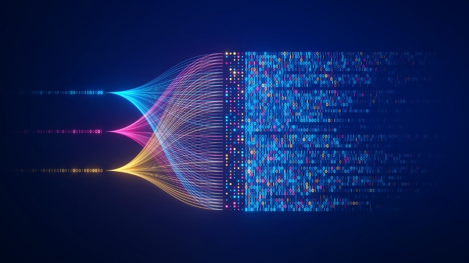
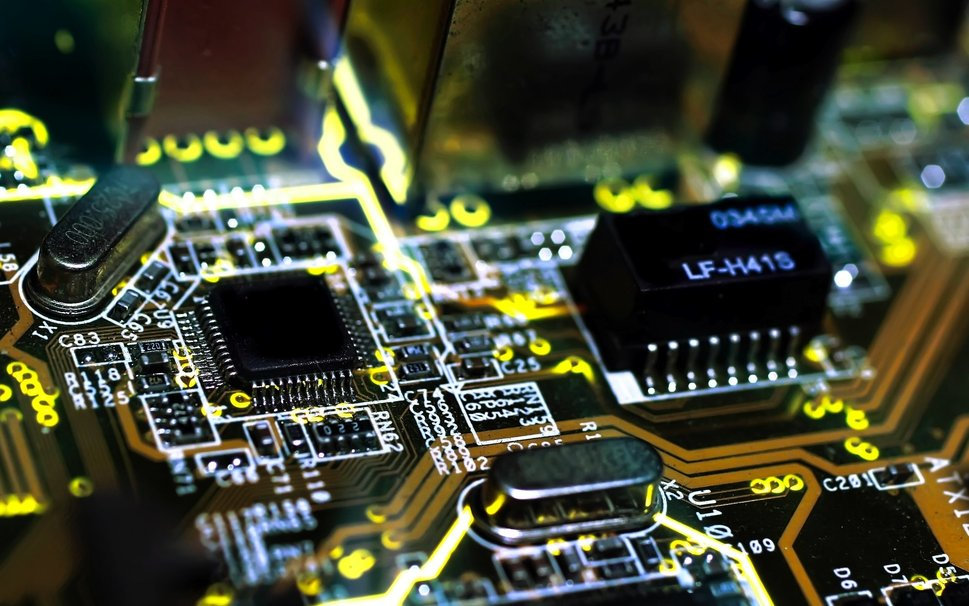
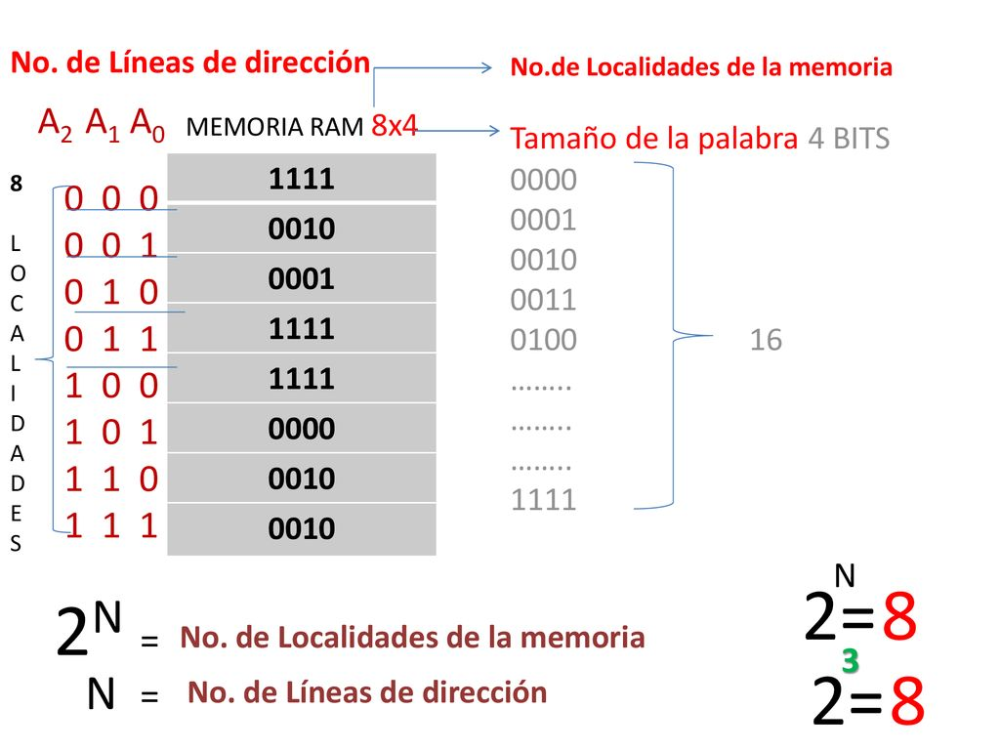
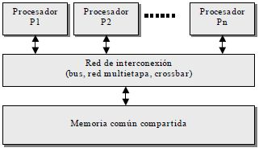
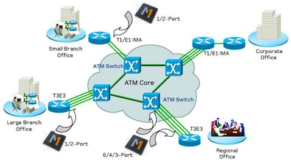

La computación paralela se basa en la idea de dividir un problema en tareas más pequeñas y procesarlas de manera simultánea utilizando múltiples recursos de computación. Esto permite un procesamiento más rápido y eficiente en comparación con los enfoques secuenciales tradicionales. Algunos aspectos fundamentales de la computación paralela incluyen la sincronización de tareas, la comunicación entre procesos y la gestión de recursos.
Existen varios tipos de computación paralela que se utilizan en diferentes contextos y escenarios. Algunos de los enfoques más comunes incluyen el procesamiento paralelo a nivel de bit, a nivel de instrucción, a nivel de datos y a nivel de tarea. Estos enfoques se diferencian en cómo se dividen y procesan las tareas y los datos.
La clasificación de la computación paralela puede realizarse en función de la forma en que se dividen las tareas y los datos, así como de la forma en que se coordinan y comunican los procesos paralelos. Algunas clasificaciones comunes incluyen la computación paralela a nivel de bit, a nivel de instrucción, a nivel de datos y a nivel de tarea. 
La arquitectura de computadores secuencial se refiere a los sistemas informáticos tradicionales en los que las instrucciones se ejecutan una tras otra en secuencia. Este tipo de arquitectura sigue siendo común en muchas computadoras personales y estaciones de trabajo. 
La organización de direcciones de memoria se refiere a cómo se asignan y acceden a las direcciones de memoria en un sistema de computación paralela. Esto incluye consideraciones como la memoria compartida, la memoria distribuida y las técnicas de direccionamiento utilizadas para acceder a los datos en paralelo. 
Los sistemas de memoria compartida son un enfoque de computación paralela en el que múltiples procesadores acceden a una misma área de memoria compartida. Esto permite a los procesadores compartir datos y comunicarse de manera eficiente. Dentro de los sistemas de memoria compartida, existen dos tipos principales de redes: las redes de medio compartida y las redes conmutadas. 
Las redes de medio compartida son un tipo de arquitectura de memoria compartida en la que los procesadores se conectan físicamente a un bus compartido o a una red de interconexión. Los procesadores pueden leer y escribir en la memoria compartida a través de este medio compartido.
Las redes conmutadas, por otro lado, utilizan interruptores o conmutadores para establecer conexiones entre los procesadores y la memoria compartida. Estas redes ofrecen una mayor escalabilidad y capacidad de comunicación en comparación con las redes de medio compartida. 
Los sistemas de memoria construida son una forma de organización de la memoria en la computación paralela en la que cada procesador tiene su propia memoria local. Esto permite una mayor independencia entre los procesadores y reduce la necesidad de acceder a una memoria compartida.
En el campo de la computación paralela, existen numerosos casos de estudio que han demostrado la eficacia y los beneficios de los enfoques paralelos en diferentes dominios. Algunos ejemplos incluyen el uso de computación paralela en simulaciones científicas, análisis de grandes conjuntos de datos, renderizado de gráficos y modelado de sistemas complejos.